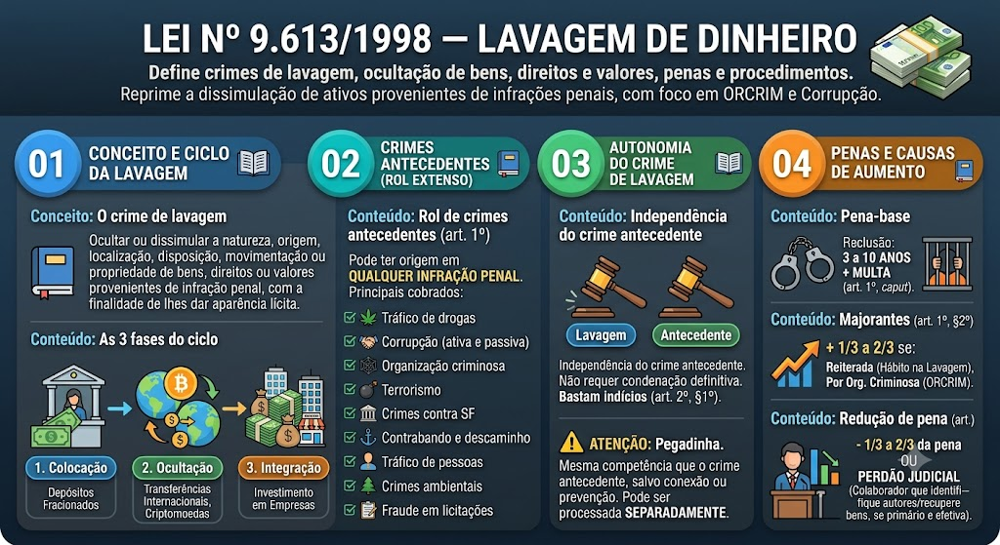

Material de estudo: Lei nº 14.133/2021 — Crimes em Licitações e Contratos
Material complementar · Ver fonte no GitHub
Conceito e Abrangência
Crimes licitatórios
São crimes praticados contra a administração pública no âmbito de licitações e contratos, previstos no Título XI do Código Penal (arts. 337-E a 337-P), inseridos pela Lei 14.133/2021. Substituem os antigos crimes da Lei 8.666/93.
Principais Crimes (arts. 337-E a 337-P)
Rol dos crimes
Os principais tipos penais são:
- Art. 337-E – Frustrar ou fraudar licitação: impedir, frustrar ou fraudar o caráter competitivo da licitação – reclusão de 2 a 4 anos + multa.
- Art. 337-F – Patrocínio de contratação indevida: patrocinar, direta ou indiretamente, interesse privado em licitação – reclusão de 1 a 3 anos + multa.
- Art. 337-G – Modificação ou pagamento irregular em contrato: modificar ou pagar objeto contratual em desacordo com a licitação – reclusão de 2 a 4 anos + multa.
- Art. 337-H – Fraude em licitação com identidade: utilizar identidade fictícia para obter vantagem – reclusão de 2 a 5 anos + multa.
- Art. 337-I – Fraude em execução de contrato: fraudar a execução de contrato, especialmente por meio de fornecimento de material diverso – reclusão de 2 a 4 anos + multa.
- Art. 337-J – Admissão de vantagem indevida: admitir, ainda que de forma não formal, vantagem indevida em razão de contrato – reclusão de 2 a 4 anos + multa.
- Art. 337-K – Inobservância de exigência legal: deixar de observar exigências legais com intuito de obter vantagem – detenção de 6 meses a 1 ano + multa.
- Art. 337-L – Dispensa indevida: dispensar ou inexigir licitação fora das hipóteses legais – reclusão de 1 a 3 anos + multa.
- Art. 337-M – Desvio de finalidade: desviar finalidade de contrato ou licitação – reclusão de 2 a 5 anos + multa.
- Art. 337-N – Corrupção em licitação: corromper ou tentar corromper agente público em licitação – reclusão de 2 a 5 anos + multa.
- Art. 337-O – Omissão de informação: deixar de comunicar fato relevante à administração – detenção de 6 meses a 1 ano + multa.
- Art. 337-P – Sonegação ou fraude em documento: sonegar ou fraudar documentos exigidos – reclusão de 2 a 5 anos + multa.
Aumento de Pena
Causas de aumento
As penas podem ser aumentadas de 1/3 até a metade se:
- O crime for cometido por funcionário público no exercício de suas funções;
- O crime envolver verbas públicas de programas sociais ou de saúde;
- O crime resultar em dano ao erário de valor elevado.
Mapa-mental
Mapa-mental
